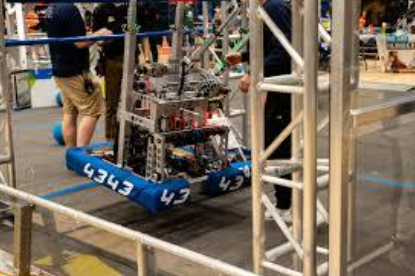
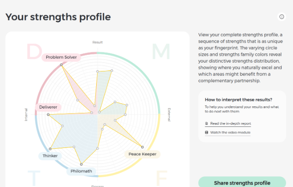

Mechatronics Engineering student at York University’s Lassonde School of Engineering, building robots and automation for agriculture and education — currently Robotics & Tech Lead on co-op at STEM Minds Corp.
I grew up in York Region, north of Toronto, where two things shaped me: easy access to the outdoors, which made hiking a lifelong way to find peace in a chaotic world, and a garage with enough room to fill with tools and half-finished projects. My mother started her own STEM education business when I was ten because she believed hands-on learning should be accessible — and she never leaves things half-done. From her I learned that persistence and finishing what you start is a skill, and it’s the example I draw on every time I refuse to abandon a challenging project.
For a long time I assumed my future was in computer science because I loved video games and wanted to design them. Then I joined my high school’s FIRST Robotics Competition (FRC) team, and everything shifted. I spent hours in the workshop with friends, sketching parts and then actually manufacturing them in our machine shop, and discovered the magic of taking an idea from a screen and making it real. The moment it became permanent was the first time I drove the robot we had built — knowing I had helped create something that complex settled the question, and I changed direction toward mechatronics.
That’s also why I chose York and the Lassonde School of Engineering. York has an exceptional machine shop and hands-on labs, and because I learn best by doing, a school that lets me build rather than only study is exactly where I belong.

Creativity appears in both lists — it’s not just something I want from a job, but a core part of how I want to live. The most surprising result was how highly collaboration and leadership ranked. I’d always thought of myself as someone who would rather work alone, but looking back at FRC and other projects, my best work has almost always happened alongside other people.

A laser-cut germination grow kit for education, with a sensor-monitored version in development.
An eight-wheeled robot that autonomously drives crop rows and picks plants with a 3-DOF arm.
A CNC-style robot with an automatic tool changer — motion control skills I taught myself along the way.
Field sensor nodes measuring humidity, temperature, soil moisture, and light, networked over LoRa.
An actuator-driven hitch adapter that brings farming implements to any vehicle with a 2” receiver.
Licensed pilot flying a 50-pound agricultural drone for aerial mapping and spray missions.